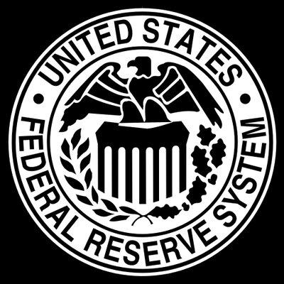
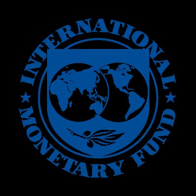
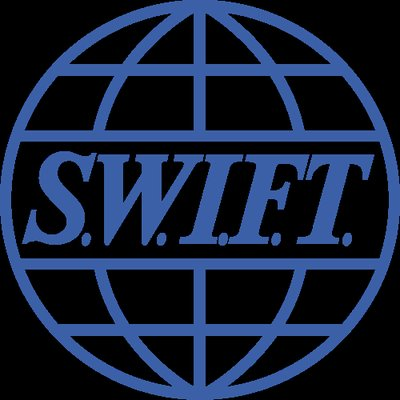
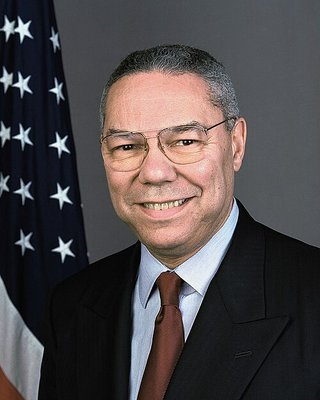
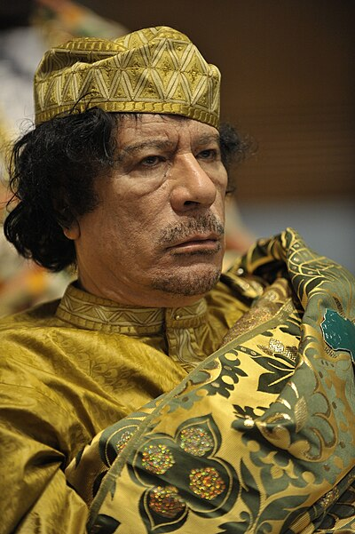
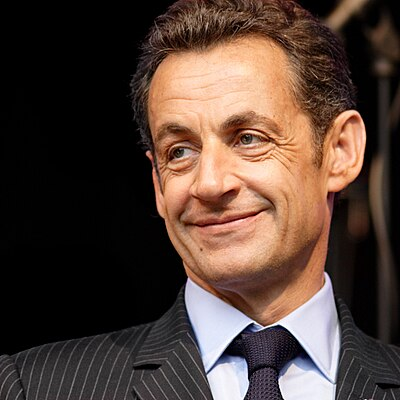
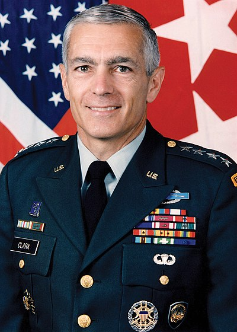
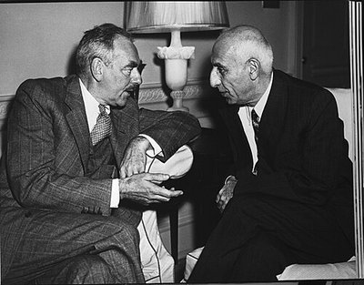
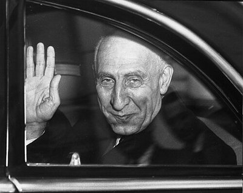
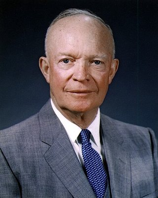

Money Wars
The architecture of dollar power. The nations that tried to step outside it. The wars unfolding on the news are rarely what the public is told.
The Architecture
Before a single bomb is dropped, the financial system decides who lives and who dies.
This is not a metaphor. It is an architecture — built over a century, refined through two world wars, and enforced through a mechanism so effective that most people don’t know it exists.
To understand why Iran was under bombardment as this scroll was written in April 2026 — why Iraq was invaded, why Libya was shattered, why Venezuela was strangled by sanctions and intervention, why Cuba has been under siege for more than six decades — you have to understand where the money goes.
Start at the beginning.
Jekyll Island
In November 1910, six men boarded a private railcar in Hoboken, New Jersey. They used first names only to avoid identification. Their destination: Jekyll Island, a private resort off the coast of Georgia owned by J.P. Morgan and associates.
The six men represented approximately one-quarter of the world’s wealth. They spent nine days drafting the blueprint for what would become the Federal Reserve System.

Two years after the secret Jekyll Island meeting, Representative Arsène Pujo’s House subcommittee — the Pujo Committee (1912–1913) — found that Morgan- and Rockefeller-allied banking interests held 341 directorships across 112 corporations representing $22.2 billion in aggregate resources — a staggering concentration of financial power. The Federal Reserve was sold to the public as the solution to this very problem.
The men who created the problem wrote the solution. And the solution gave them permanent institutional leverage over the money supply.
The Federal Reserve
The Federal Reserve Act passed on December 23, 1913 — two days before Christmas, clearing the Senate 43–25 with 28 senators not voting after a 298–60 House conference vote the day before. It created a hybrid public-private system of twelve regional Reserve Banks whose stock is held by commercial member banks, overseen by a federal Board of Governors that controls monetary policy, interest rates, and the nation’s money supply.
It is neither a purely public treasury nor an ordinary private firm: member-bank stock carries capped statutory dividends and net earnings remit to the U.S. Treasury, yet the system operates insulated from direct political control — marrying private banking architecture to a federal charter.

The Central Bank of Central Banks
In 1930, the Bank for International Settlements was established in Basel, Switzerland. Officially, it exists to coordinate monetary policy among central banks. In practice, it operates above national sovereignty.
The BIS has diplomatic immunity. Its assets cannot be seized. It is not subject to the jurisdiction of any nation. Sixty-three central banks are members. If your country’s central bank is a BIS member, your monetary policy is coordinated through Basel.
Bretton Woods
In July 1944, 730 delegates from 44 Allied nations gathered at the Mount Washington Hotel in Bretton Woods, New Hampshire. They designed the post-war global financial order.
Two institutions were created: the International Monetary Fund and the World Bank. The US dollar was established as the world’s reserve currency, pegged to gold at $35 per ounce. Every other currency was pegged to the dollar.
The country that won the war got to write the rules of money.
The IMF was designed as the enforcer. When a country runs into financial trouble, the IMF offers loans — with conditions. These “structural adjustment programs” typically require: privatization of state assets, austerity measures, trade liberalization, and deregulation. Critics call it economic colonialism with a briefcase instead of a gun.
The IMF’s voting power is weighted by financial contribution. The United States holds approximately 16.5% of votes. Major decisions require an 85% threshold. This gives the US permanent veto power over the institution that sets the financial rules for the developing world.

The Petrodollar
In 1971, President Richard Nixon closed the gold window — ending the dollar’s convertibility to gold. The Bretton Woods system collapsed overnight. The dollar was now backed by nothing.
It needed a new anchor. It found one in oil.
In June–July 1974, Secretary of State Henry Kissinger and Treasury Secretary William Simon brokered a landmark arrangement with Saudi Arabia: while crude was already priced in dollars, Riyadh agreed through a secret Treasury “add-on” channel to recycle billions in surplus petrodollars quietly into U.S. Treasury securities, paired with a U.S.-Saudi Joint Commission on Economic Cooperation and American security backing for the Saudi regime.

Every country that wanted to buy oil needed dollars first, and surplus oil revenues flowed straight back into U.S. sovereign debt. Global demand for dollars was anchored — not by gold, not solely by economic output, but by the world’s dependence on energy.
SWIFT
In 1977, the SWIFT network went live — the Society for Worldwide Interbank Financial Telecommunication. A Belgian cooperative that provides the messaging layer for virtually all cross-border banking.
Over 11,000 financial institutions across 200+ countries. Approximately 45 million messages per day. SWIFT does not move money — it sends the instructions that tell banks to move money. But because almost every international transaction runs through it, being cut off from SWIFT is functionally identical to being cut off from the global economy.

The U.S. dollar has been used on one side of roughly 88% of all forex transactions (rising to 89% in the BIS April 2025 triennial survey). Approximately 58% of global foreign exchange reserves were held in dollars in 2024 (edging down to 56.7% by Q2 2026). Every dollar-denominated transaction on Earth must clear through a U.S. correspondent bank — giving the U.S. Treasury legal jurisdiction over financial activity worldwide.
The Kill Switch
The Office of Foreign Assets Control — OFAC — housed within the U.S. Treasury, maintains a list of individuals, entities, and entire nations that are blocked from the U.S. financial system. The number of active sanctions designations grew from approximately 900 in the year 2000 to over 9,400 by 2021 — a tenfold increase in two decades — and reached roughly 19,571 active designations by November 2026.
A twentyfold expansion in a quarter-century.
Secondary sanctions extend this further: any non-US bank that does business with a sanctioned entity can itself be cut off from the dollar. This forces every bank on Earth to enforce American foreign policy — regardless of what their own government thinks.
The EU has officially condemned secondary sanctions as violations of sovereignty. But no European bank has ever defied them. The cost of losing dollar access is existential.
Secret meeting → Hybrid bank-owned central bank → Supranational coordination → Dollar as world reserve → Oil as dollar anchor → Global financial kill switch.
This is the architecture. It was not built to serve nations. It was built to control them.
The Holdouts
There is a pattern. It is not hidden. It is sitting in plain sight across fifty years of foreign policy, and once you see it, you cannot unsee it.
Every country in the following list faced complex geopolitical and domestic crises — yet each also shared one structural trait rarely mentioned on the evening news: they rejected the dollar system, proposed a currency alternative, or operated a central bank outside the BIS/IMF framework. Every one of them was subjected to sanctions, regime change, or military intervention.
Iraq — The Euro Switch
In November 2000, Iraqi President Saddam Hussein made a move that challenged the dollar’s monopoly on oil trade: with UN approval, he switched Iraq’s oil sales from U.S. dollars to euros under the UN Oil-for-Food Programme.
The financial press noted it at the time. Few connected it to what came next.
The move was derided as irrational. The euro was worth $0.82 at the time. But between 2000 and 2003, the euro appreciated 30% against the dollar. Iraq’s $10 billion UN escrow fund, also converted to euros, gained an estimated $2–3 billion in pure currency gains. The “irrational” move was printing money.
January 2002: President George W. Bush names Iraq part of the “Axis of Evil.”
March 2003: The United States invades Iraq. The stated justification is weapons of mass destruction.

The Duelfer Report (2004) — the CIA’s own comprehensive investigation — concluded that Iraq had no WMDs and no active programs to produce them.
The invasion cost an estimated $2 trillion in direct appropriations. Brown University’s Costs of War project estimates the total cost, including veterans’ care and debt interest, at up to $3 trillion. Over 4,500 American soldiers died. Estimates of Iraqi civilian deaths range from 150,000 to over 600,000.
Dick Cheney (1941–2025), who served as CEO of Halliburton from 1995 to 2000, became Vice President. Halliburton and its subsidiary KBR received $39.5 billion in Iraq contracts between 2003 and 2013, including the no-bid Restore Iraqi Oil contract. The U.S. defense budget doubled from $316 billion (2001) to $696 billion (2010).


Whether or not currency competition drove the war’s architects — a causal inference rather than a stated war aim — the outcome was unambiguous: Iraqi oil went back on the dollar, and the euro precedent disappeared.
Libya — The Gold Dinar
Libya under Muammar Gaddafi carried virtually zero external debt (roughly 3–5% of GDP, dwarfed by over $150 billion in foreign reserves and sovereign wealth). Its central bank was state-owned, independent of the BIS. The country had the highest Human Development Index in Africa, free healthcare, free education, and a sovereign wealth fund of approximately $70 billion.
Gaddafi’s plan was to create a pan-African gold-backed currency — the gold dinar — that would replace both the US dollar and the euro in African trade. Libya had accumulated approximately 144 tonnes of gold to back it.

The gold dinar was an existential threat to France in particular. Fourteen African nations use the CFA franc — a currency created by France in 1945 and historically tied to the French Treasury. All fourteen were long required to deposit 50% of their foreign exchange reserves with France, an arrangement ended for the eight West African (WAEMU) states in 2020 while remaining in place for the six Central African (CEMAC) states. The CFA franc originally stood for “Colonies Françaises d’Afrique.”
A gold-backed alternative would have ended French monetary control over half a continent.
March 19, 2011: French jets fire the first shots. NATO intervenes under UN Resolution 1973, authorized to “protect civilians.”
October 20, 2011: Gaddafi is captured and killed. Beaten, sodomized with a bayonet, shot. Graphic footage circulates globally.
Secretary Clinton, informed of his death on camera, responds:
Here is what happened in the weeks after the rebellion began, while the war was still being fought, while Gaddafi still controlled most of the country:
The rebels moved immediately to stand up a rival central bank.
This was virtually without precedent. While Tripoli’s central bank remained frozen under UN sanctions, the Transitional National Council designated the Benghazi branch of the Central Bank of Libya and formed a parallel national oil company within weeks of the uprising to receive crude revenues.

Nicolas Sarkozy, who led the charge for intervention, was later convicted by a Paris court in September 2025 of criminal conspiracy (association de malfaiteurs) over an effort to secure illicit 2007 campaign financing from Gaddafi’s regime — while acquitted of direct passive corruption and illegal campaign financing counts, as prosecutors could not trace the alleged €50 million directly into campaign accounts (his appeal ruling was scheduled for November 30, 2026).
Fifteen years after the 2011 intervention, Libya remains divided between two competing governments, with open-air migrant slave markets documented by CNN in 2017, endemic human trafficking, and fractured national institutions. The country that once held the highest development index in Africa was reduced to a place where human beings are sold for $400.
The gold dinar died with Gaddafi. The CFA franc survived.
Venezuela — The Last Oil Holdout
Venezuela has the world’s largest proven oil reserves. The country nationalized its oil industry in 1976 under President Carlos Andrés Pérez; under President Hugo Chávez (1999–2013), the state reasserted majority control over foreign heavy-oil joint ventures, rejected IMF structural adjustment, and sought oil trade arrangements outside the dollar system.
In April 2002, a coup briefly removed Chávez from power. The Bush administration blamed Chávez for his own ouster and welcomed the interim coup leadership before Chávez was restored within 48 hours by popular mobilization and loyalist officers.
When the coup failed, the financial war began. By 2019, OFAC had designated PDVSA — Venezuela’s state oil company and the source of 95% of export earnings. Oil production collapsed from 2.3 million barrels per day to roughly 400,000.
In 2019, the Bank of England refused to return $1.2 billion in Venezuelan gold reserves held in its vaults. The UK recognized opposition leader Juan Guaidó — a man who had never won a presidential election — as the “legitimate president” and used that as legal justification to freeze a sovereign nation’s gold.
Events in Venezuela moved from financial warfare to direct military intervention in early 2026. On January 3, 2026, U.S. special forces captured President Nicolás Maduro and First Lady Cilia Flores in Operation Absolute Resolve, transferring them to federal detention in Brooklyn, New York, to face narco-terrorism and drug-trafficking charges (to which they pleaded not guilty). Vice President Delcy Rodríguez assumed office as acting president under intense U.S. pressure. By November 2026, the State Department reported managing over $12 billion in Venezuelan oil transactions across the first nine months of the year; ExxonMobil signed an exploration memorandum of understanding with PDVSA; Venezuela published a macroeconomic framework disclosing $237.5 billion in defaulted public debt ahead of restructuring; and on November 18, 2026, Defense Secretary Pete Hegseth visited Caracas to sign a bilateral security cooperation pact, calling Venezuela a “compliant security partner” — explicitly framing Venezuelan oil as a Western Hemisphere hedge against Strait of Hormuz disruptions.
Cuba — Sixty Years of Siege
The U.S. embargo on Cuba has been in effect since 1962 — the longest economic embargo in modern history. Its stated purpose was written in plain language. A declassified State Department memorandum from Deputy Assistant Secretary of State Lester D. Mallory (April 6, 1960) reads:
The Helms-Burton Act (1996) codified the embargo into law and extended it extraterritorially — meaning the U.S. punishes other countries for trading with Cuba. Cuba is not a member of the IMF or the World Bank — one of the few nations on Earth excluded from both.
Every year since 1992, the UN General Assembly has voted to condemn the embargo. For decades the tally ran roughly 185 to 2 — nearly the entire world versus the United States and Israel.
While the UN General Assembly again condemned the U.S. embargo 187–2 in October 2024, the diplomatic consensus fractured noticeably in the 34th annual vote in October 2026. Following aggressive U.S. diplomatic pressure, secondary-tariff threats against fuel suppliers, and the disruption of Venezuelan oil shipments, the resolution still passed decisively — but with a multi-decade low of 130 votes in favor, 17 against, and 25 abstentions.
The Pattern
Line them up.
In 2007, retired four-star General Wesley Clark — former NATO Supreme Allied Commander — described a memo he was shown at the Pentagon shortly after September 11, 2001:

Six of the seven countries on Clark’s list have since been subjected to invasion, regime change, proxy war, or devastating sanctions. The seventh — Iran — was being bombed as this scroll was written in April 2026.
The Playbook
The pattern didn’t start with Iraq. It didn’t start with the War on Terror. The operational playbook — the fusion of intelligence, banking, and military force into a single covert machine — was written decades earlier.
It was called Iran-Contra. And it never ended.
The Original Sin — Iran, 1953
In 1951, Iranian Prime Minister Mohammad Mossadegh nationalized Iran’s oil industry, ending British Petroleum’s exclusive control. He was democratically elected. He was Time magazine’s Man of the Year in 1951.
In 1953, the CIA and MI6 executed Operation TPAJAX — overthrowing Mossadegh and installing Shah Mohammad Reza Pahlavi, who would rule as a Western-aligned dictator for 26 years.


The 1979 Iranian Revolution that overthrew the Shah — the revolution that created the Islamic Republic that the U.S. has confronted ever since — was a direct consequence of the 1953 coup. The modern arc of U.S.-Iran hostility traces back to the CIA overthrowing a democracy to protect oil profits and Cold War alignment.
Since the 1979 Islamic Revolution, Iran has not launched a full-scale conventional invasion of a sovereign neighbor — even though the United States overthrew its elected government within living memory and backed Iraq’s 1980 invasion of Iran.
Iran-Contra — The Blueprint
In the 1980s, President Ronald Reagan’s administration ran a covert operation that fused everything: arms trafficking, drug running, illegal banking, intelligence operations, and off-the-books foreign policy into a single shadow apparatus.
They sold weapons to Iran (which was under an arms embargo), used the profits to fund the Contra rebels in Nicaragua (which Congress had explicitly prohibited), and used CIA-connected drug trafficking networks to supplement the funding.
The banking vehicle was BCCI — the Bank of Credit and Commerce International — which the CIA used to launder money, fund covert operations, and maintain financial relationships with intelligence assets worldwide. BCCI collapsed in 1991 in a roughly $20 billion fraud and money-laundering scandal (documented in the Senate Foreign Relations Committee’s 1992 report, S. Prt. 102-140).
National Security Council aide Lieutenant Colonel Oliver North’s declassified notebooks — 2,000 pages released in 1990 — contain entries documenting his awareness that aircraft used in the Contra resupply program had been “used at one time to run drugs.”
Investigative journalist Gary Webb documented the cocaine pipeline in his 1996 “Dark Alliance” series for the San Jose Mercury News: Contra-linked dealers funneled crack cocaine into American cities, and the profits flowed back to the CIA-backed rebels.
The CIA orchestrated a media campaign to discredit Webb. He was found dead in 2004, ruled a suicide, with two gunshot wounds to the head.


Iran-Contra was not an aberration. It was a proof of concept. The apparatus demonstrated that intelligence agencies, banks, drug networks, and military operations could be fused into a single covert machine that operated outside democratic oversight.
BCCI was shut down in 1991. But the operational model — covert finance, offshore banking, parallel foreign policy — was not shut down. It was refined.
Libya to Syria — The Rat Line
On September 11, 2012, the US compound and CIA annex in Benghazi, Libya were attacked. Ambassador J. Christopher Stevens and three other Americans were killed.
The official explanation focused on a spontaneous protest over a YouTube video. Clinton’s private emails told a different story. She emailed her daughter that night: “Two of our officers were killed in Benghazi by an al Queda-like group.” She told the Egyptian Prime Minister the next day: “We know that the attack in Libya had nothing to do with the film.”
The deeper question was never adequately answered in public: what was the CIA doing in Benghazi? The CIA annex housed far more personnel than the diplomatic compound. Investigative journalist Seymour Hersh reported in the London Review of Books that the CIA was managing a covert weapons pipeline — a “rat line” — funneling weapons from Libya’s post-Gaddafi arsenals through Turkey into the hands of Syrian rebel groups.
This is the playbook: overthrow a government, seize the weapons, funnel them into the next theater. Each war feeds the next. Each destroyed state becomes a staging ground for the destruction of the next holdout.
The Broadcast
Every war on this list was sold to the public with a different label. Not one was sold as what it was.
The label changes. The pattern doesn’t. And the one thing never mentioned on the broadcast is the one thing they all have in common: the money.
Manufacturing the Narrative
This is not speculation about how media works. It is documented infrastructure.
Media Infiltration (“Operation Mockingbird”): During the Cold War, the CIA cultivated extensive relationships across American journalism — an apparatus internally dubbed Frank Wisner’s “Mighty Wurlitzer” and later popularized under the umbrella label “Operation Mockingbird” (after a separate, declassified 1963 CIA wiretap codenamed Project Mockingbird). The Senate’s Church Committee final report (April 1976) documented ties to roughly 50 American journalists and media personnel alongside hundreds of foreign assets; investigative journalist Carl Bernstein reported in Rolling Stone (October 1977) that over 400 American journalists had carried out assignments for the CIA over twenty-five years.
The Iraq Template
The Iraq War was the clearest case study in manufactured consent. The Project for the New American Century — whose June 1997 Statement of Principles was signed by Dick Cheney, Donald Rumsfeld, Paul Wolfowitz, and Jeb Bush (never George W. Bush) — published a September 2000 report titled “Rebuilding America’s Defenses,” authored by Thomas Donnelly with Wolfowitz and I. Lewis Libby among its project participants and building on Cheney’s 1992 Defense Policy Guidance. It argued for American military dominance and regime change in Iraq, acknowledging that the transformation would be slow “absent some catastrophic and catalyzing event — like a new Pearl Harbor.”
One year later, they got their Pearl Harbor.
On September 10, 2001 — one day before the attacks — Secretary of Defense Donald Rumsfeld announced that the Pentagon could not track $2.3 trillion in transactions, citing a 2000 Inspector General audit (D-2000-179) of unsupported accounting adjustments across incompatible legacy ledgers rather than missing cash.
By the next morning, that story was gone from the front page. When mandatory enterprise-wide audits finally began in FY2018, the Pentagon failed eight consecutive times through FY2025 (and failed a ninth in November 2026). Trillions in defense assets remain unaudited at the enterprise level.
In November 2026, the Department of Defense failed its ninth consecutive enterprise-wide financial audit (FY2026 disclaimer of opinion across more than $4.8 trillion in assets), though 14 of 25 standalone reporting entities (covering over 56% of assets) received clean opinions ahead of Congress’s FY2028 clean-audit mandate. Total U.S. national defense spending across FY2025–FY2027 crossed the $1.1 trillion threshold (combining DoD discretionary, reconciliation, and Department of Energy nuclear funds), and the Government Accountability Office’s lifecycle cost estimate for the F-35 program rose past $2 trillion.
The gap between the broadcast and reality is not a flaw in the system. It is the system. Public narratives are managed to manufacture support for interventions that serve financial and strategic interests. When the public narrative collapses — as it did with Iraq’s WMDs — it collapses too late. The objective has already been achieved.
The Last Holdout
Iran is not a peripheral target. It is the endgame.
Iran holds the world’s third-largest conventional proven oil reserves (fourth if Canadian oil sands are included). Its central bank is not a member of the BIS. It was excluded from SWIFT in 2012, briefly reconnected under the nuclear deal, and excluded again in 2018. It has been under some form of U.S. sanctions for over four decades. And in January 2024 it joined the expanded BRICS bloc.
Every characteristic that got Iraq, Libya, and Syria destroyed, Iran possesses. The only difference is scale.
The Deal That Was Broken
In 2015, Iran signed the Joint Comprehensive Plan of Action — the nuclear deal — with the P5+1 nations. Iran agreed to limit uranium enrichment, reduce centrifuges, and allow international inspections. In exchange: sanctions relief.
The IAEA confirmed more than ten times that Iran was in full compliance.
In May 2018, President Donald Trump unilaterally withdrew the United States from the deal. Iran was complying. The U.S. broke it anyway.
The withdrawal demonstrated something that resonated far beyond Iran: a negotiated agreement with the United States can be unilaterally voided by the next president. If the most powerful country on Earth will not honor its own signatures, what is the incentive to negotiate?
Financial Warfare
Iran was first cut from SWIFT in March 2012. Approximately 30 Iranian banks were disconnected — the first time in SWIFT’s history that an entire country’s banking sector was severed.
The impact was immediate. Oil exports dropped from 2.5 million barrels per day to roughly one million. The Iranian rial lost approximately 80% of its value. Iran was forced into barter arrangements — oil for goods, hawala networks, cryptocurrency, and eventually yuan-denominated trade with China.
The Escalation
The conflict escalating when this scroll was written in April 2026 entered a protracted stalemate rather than a rapid regime collapse or clean diplomatic exit. Following the June 22, 2025 U.S. strikes on Fordow, Natanz, and Isfahan (Operation Midnight Hammer) and the February 28, 2026 opening of Operation Epic Fury and Operation Roaring Lion (which killed Supreme Leader Ali Khamenei and claimed thousands of lives across Iran and the region), Iran moved to close and contest the Strait of Hormuz. An April 2026 Pakistan-mediated temporary ceasefire and a mid-June memorandum of understanding both broke down by July. As of November 2026, no comprehensive ceasefire is in place: the U.S. enforces a naval blockade on Iranian ports while escorting commercial tankers through the strait (restoring roughly two-thirds of pre-war transit volume), even as IRGC mine, drone, and projectile attacks on shipping surged again in October–November 2026.
What the Broadcast Won’t Tell You
The dominant narrative frames this as a nuclear crisis and a terrorism problem. Those elements are real. But they are not the whole story, and they are not the sole structural driver.
Iran sells oil to China in yuan. It joined BRICS in January 2024. It operates an oil bourse that trades in non-dollar currencies. Every barrel of Iranian oil sold outside the dollar system is a brick removed from the foundation of U.S. financial hegemony.
Approximately 20 million barrels of oil per day flow through the Strait of Hormuz — 20% of global consumption. Disrupting it sends energy markets into shock and threatens global recession. That chokepoint remained Iran’s core asymmetric deterrent — and the main reason Washington relied on airpower and naval blockade rather than an Iraq-style ground invasion.
A peaceful, sanctions-free Iran trading oil in multiple currencies would be a structural challenge to the dollar system. A hostile, sanctioned Iran paradoxically reinforces dollar dominance — by demonstrating the consequences of leaving the system.
Context the broadcast omits:
- The U.S. overthrew Iran’s democratic government in 1953 to protect oil profits (CIA declassified, 2013)
- The U.S. backed Iraq’s invasion of Iran (1980–1988), including when Iraq used chemical weapons
- The U.S. shot down Iran Air Flight 655 in 1988, killing 290 civilians, and never formally apologized
- The U.S. broke the nuclear deal while Iran was in verified compliance (2018)
- Since the 1979 Islamic Revolution, Iran has not launched a full-scale conventional invasion of a sovereign neighbor
The Bigger Picture
Iran is not alone. The expanded BRICS bloc represented roughly 45% of the world’s population. China and Russia settle the majority of their bilateral trade in yuan and rubles. Saudi Arabia has explored yuan-settled energy arrangements and cross-border currency alternatives with China. Central banks worldwide purchased over 1,000 tonnes of gold per year for three consecutive years in 2022–2024 — record levels — diversifying away from dollar reserves.
The dollar’s share of official global reserves declined from 72% in 2000 to roughly 58% by 2024 (edging down to 56.7% by Q2 2026). Each use of the sanctions weapon accelerates the construction of alternatives. As a former U.S. Treasury official acknowledged: there is a “risk of diminishing returns” from overuse.
Structural metrics moved in both directions through late 2026. OFAC’s SDN list roughly doubled from its 2021 level (~9,400) to ~19,571 active designations by November 2026. According to IMF COFER data (which eliminated its “unallocated” bucket in Q3 2025), the dollar’s share of official global foreign exchange reserves edged down further to 56.70% in Q2 2026 (57.13% in Q1 2026). Yet in the BIS April 2025 Triennial Survey, the dollar’s share of global FX trading turnover rose one point to 89% (of $9.6 trillion/day), underscoring how sticky dollar liquidity remains even as reserves diversify. Meanwhile, World Gold Council figures show central banks exceeded 1,000 tonnes of net gold purchases for a third straight year in 2024, cooled to 863 tonnes in 2025 (still nearly double the pre-2022 average), and surged again in 2026 (adding 321 tonnes in Q3 alone).
The Ledger
Follow the money. Not the rhetoric. Not the flags. Not the five-minute segment on cable news. Follow the money.
Who Profits
The U.S. defense budget authorized for fiscal year 2024 was $886 billion, and by FY2026–FY2027 total national defense spending exceeded $1.1 trillion (including reconciliation and atomic-defense funds). The Pentagon’s FY2026 budget carved out a dedicated $13.4 billion portfolio for AI, autonomy, and unmanned systems (including $9.4 billion for aerial drones). The U.S. maintains approximately 800 overseas military bases in more than 70 countries.
This infrastructure requires justification. Threat narratives sustain budgets. This is not conspiracy — it is institutional incentive structure.
The revolving door spins:
- Dick Cheney (1941–2025): CEO of Halliburton (1995–2000) → Vice President → Halliburton/KBR receives $39.5 billion in Iraq contracts (2003–2013)
- Donald Rumsfeld: Secretary of Defense → Announces $2.3 trillion in untracked Pentagon accounting adjustments (Sept 10, 2001)
- Lloyd Austin: Raytheon board member → Secretary of Defense (2021–2025, recused from Raytheon matters)
- The F-35 Joint Strike Fighter: over $2 trillion estimated lifecycle cost (per GAO, 2024–2026) — the most expensive weapons program in history
On January 17, 1961, President Dwight D. Eisenhower — a five-star general who commanded D-Day — gave his farewell address. His original draft used the phrase “military-industrial-congressional complex.” The word “congressional” was removed before delivery.

The Coordination Layer
Above the defense contractors and the banks sits a coordination layer. The Council on Foreign Relations, founded in 1921, has included the vast majority of Secretaries of State and CIA Directors over the past century. The Trilateral Commission, co-founded by David Rockefeller and Zbigniew Brzezinski in 1973, fosters alignment between North American, European, and Japanese elites. The Bilderberg Group convenes 120–150 of the most powerful people in finance, government, and media annually under Chatham House Rule.


These are not secret societies. They are documented coordination mechanisms. Their membership lists are public. Their policy influence is traceable.
What This Means
The wars unfolding as this scroll was written in April 2026 are rarely what the broadcast claims. Nuclear proliferation, regional rivalries, and humanitarian crises are real dangers to the people living under them — never irrelevant, yet never the full story either. The omitted financial and currency layer is the structural engine.
That engine is a financial architecture built over a century that depends on global compliance to function. Countries that comply are clients. Countries that step outside it become targets.
The system is documented. The Fed’s hybrid bank-owned charter is public law. The BIS’s sovereign immunity is treaty-based. The 1974 petrodollar recycling channel is declassified. SWIFT exclusion is EU regulation. The sanctions list is published by Treasury. General Wesley Clark’s account of the seven-country memo is on video. The Blumenthal email to Secretary Clinton is FOIA-released.
None of this is hidden. It is simply never assembled into a single picture on the broadcast.
You cannot reform the Federal Reserve from your couch. You cannot defund the Pentagon with a tweet. But you can do something the broadcast cannot prevent: you can refuse to accept the narrative without examining the ledger.
Every person who reads this and asks “who profits?” before accepting the next justification for the next war is one more person the broadcast cannot use.
Every person who sees the pattern — holdout → sanctions → regime change — is one more person who will recognize it when it happens again.
Because it will happen again. Unless enough people see the ledger.
This is not the end of the story. It is the end of the broadcast version.
Every claim in this piece is sourced. The evidence tiers are visible. The pattern is public record. The ledger is open.
What happens next depends on whether you scroll past this or share it.
Independent investigative work. No sponsors. No algorithm.
Support this research →